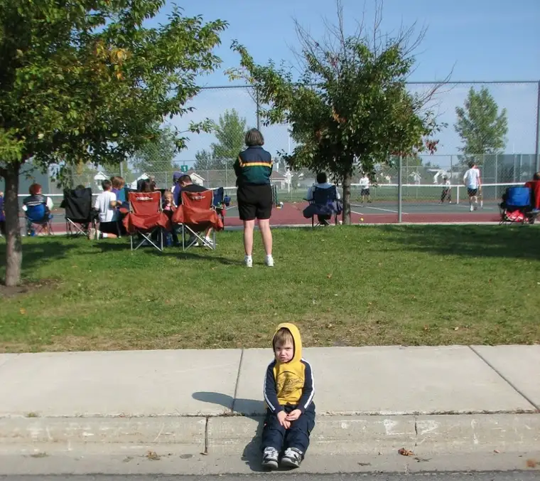

{kind=link}

I can’t believe it! Instead of checking in with my “to do” list last night, I went to bed, exhausted from the past month’s schedule of insanity. So when I checked my list just now, at 2:50 p.m., I was taken aback to notice that my youngest daughter was supposed to be out on the soccer field twenty minutes ago. Pepsi Soccer Field is about fifteen minutes away. My daughter is about ten minutes south of here at a play date, which means another twenty minutes to retrieve her and come back home. It would take another ten minutes for her to find and slip into her soccer attire, if we’re lucky. The games are a little less than an hour long, so, if you do the math, we’re hosed. If we were to show up, she will have missed the game and arrived just in time for end-of-game treats. Guess we’ll have to count our losses. And while it is what it is, I carry some regret for having let down the team.Speaking of let-downs, I think this was a case of letting down my guard too soon. My oldest son has been involved in a very short but intense season of JV tennis through his school. Though he’s been taking summer lessons for quite a few years now, this was his first season of true competition. It’s been a great experience seeing him apply those summer lessons to something more “real world,” but I think the conclusion of his season yesterday may have encouraged me to check out (mentally) a little too soon. I was on a mini vacation, happy to be done with daily tennis practices and mid-week matches. But alas, soccer season is still in full swing, and I’ve got two daughters committed to practices and playing.
That’ll mean my little boys will have to put up with more long sessions in the van and lots more waiting (see photo of my little guy at the curb).
It also means the exhale will have to wait a bit longer.
{kind=link}